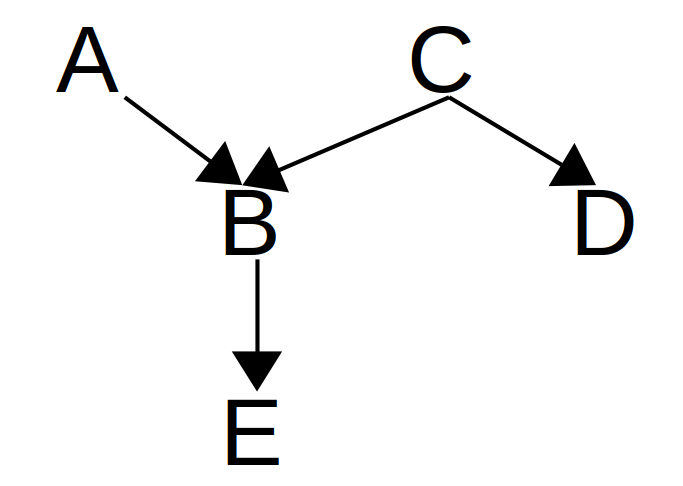
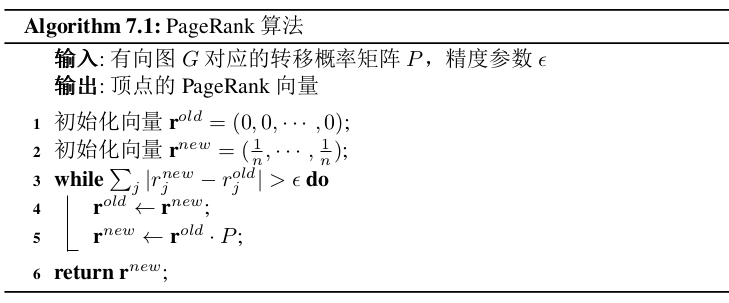
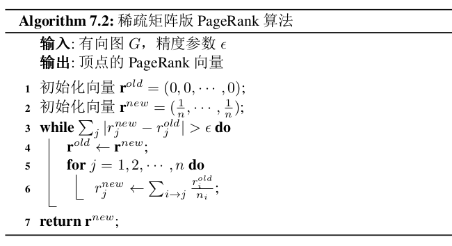
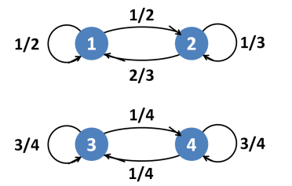
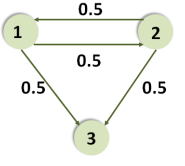
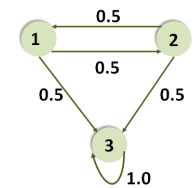
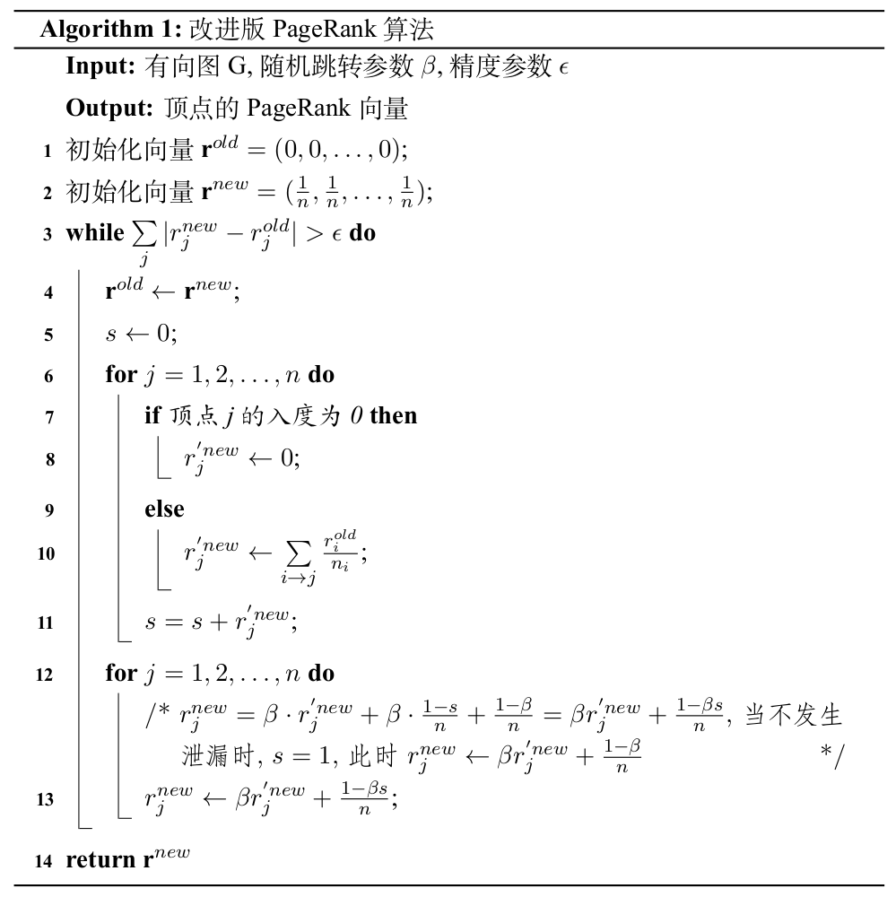

引子
联合概率
定义： 给定n个随机变量X1, X2, ..., Xn，分别取值为x1, x2, ..., xn 的联合概率 \(f(x_1,x_2,\dots,x_n)\)表示为 \[ f(x_1,x_2,\dots,x_n)=P(X_1=x_1,X_2=x_2,\dots,X_n=x_n) \] 若n个随机变量是相互独立的，那么其联合概率可以很方便地计算为 \[ \begin{align*} f(x_1,x_2,\dots,x_n) &= P(X_1=x_1,X_2=x_2,\dots,X_n=x_n) \\ &= \prod_{i=1}^{n} P(X_i=x_i) = \prod_{i=1}^{n} f_{X_i}(x_i) \end{align*} \] 然而通常情况下，数据之间并不总是独立的，比如对于声音，文本数据，其前后之间是有一定联系的.
概率的链式法则
两个事件同时发生的概率用条件概率表示为： \[ P(a,b) = P(a|b) \cdot P(b) \] 三个事件的概率链式调用为： \[ \begin{align*} P(a,b,c) &= P(a|b,c)\cdot P(b,c) \\ &= P(a|b,c) \cdot P(b|c) \cdot P(c) \end{align*} \] 其中\(P(a|b,c)\)表示在事件b和c都发生的情况下，事件a发生的概率. 推广到N个事件，有 \[ \begin{align*} P(X_1,X_2,\dots,X_n) &= P(X_1|X_2,X_3,\dots,X_n) \cdot P(X_2|X_3,X_4,\dots,X_n) \cdot \dots \cdot P(X_{n-1}|X_n) \cdot P(X_n) \\ &= P(X_n) \prod_{i=1}^{n-1} P(X_{i}|X_{i+1},\dots,X_n) \\ &= P(X_1) \prod_{i=2}^{n} P(X_{i}|X_{i-1},\dots,X_1) \end{align*} \] 那链式法则的作用呢？
假设事件a与事件b独立，那么有 \[ P(a|b) = P(a) \] 推广到三个事件有 \[ P(a|b,c) = P(a|c) \] 即事件b不是事件a的发生条件，a只与c有关.
例子： 假设有事件A，B，C，D，E，它们之间的关系·如下

则 \[ \begin{align*} P(A,B,C,D,E) &= P(E | B, D, C, A) * P(B, D, C, A)\\ &= P(E | B, D, C, A) * P(B | D, C, A) * P(D, C, A)\\ &= P(E | B, D, C, A) * P(B | D, C, A) * P(D | C, A) * P(C, A)\\ &= P(E | B, D, C, A) * P(B | D, C, A) * P(D | C, A) * P(C | A) * P(A) \end{align*} \] 而 \[ P(E | B, D, C, A) = P(E | B)\\ P(B | D, C, A) = P(B | C, A)\\ P(D | C, A) = P(D | C)\\ P(C | A) = P(C) \] 所以 \[ P(A, B, C, D, E) = P(E | B) * P(B | C, A) * P(D | C) * P(C) * P(A) \]
一阶相关关系 first-order correlation \[ P(X_i|X_i-1,\dots,X_1) = P(X_i|X_{i-1}) \] t阶相关关系 \[ P(X_i|X_{i-1},\dots,X_1) = P(X_i|X_i-1,\dots,X_{i-1}) \]
随机过程 Random process
定义
定义：（时间集合） 设T是实数轴\((-\infty,\infty)\)上的子集，且包含无限多个元素. 随机序列是时间的一个函数，可表示为\(\{X(t),t\in T\}\)，其中时间集合T表示了随机序列所有可能的时间.
定义：（随机过程） 设\((\Omega,F,P)\)是一概率空间，T表示时间集合，若对\(\forall t \in T\)，均有定义在\((\Omega,F,P)\)上的一个随机变量\(X(t,\omega)\)，\((\omega \in \Omega)\)与之对应，则称依赖于时间t的随机变量序列\(X(t,\omega)\)为一随机过程. 记为\(\{X(t,\omega),t\in T, \omega \in \Omega\}\)，简记为\(\{X(t),t \in T\}\). 随机过程\(\{X(t),t \in T\}\)的所有可能的取值被称为该随机过程的状态空间或者值域.
概率空间\((\Omega,F,P)\)：\(\Omega\)表示样本空间，F为样本空间\(\Omega\)的幂集的子集，P为概率
幂集：集合{a,b,c}的幂集为{\(\emptyset\), {a}, {b}, {c}, {a,b}, {a,c}, {b,c}, {a,b,c}}
例子：对于用户上网的过程，随机过程\(\{X(t,\omega),t\in T, \omega \in \Omega\}\)中的时间集合是离散的，因此\(X(n,\omega)\)表示该用户第n个访问的网页，其中状态空间为所有网页构成的集合，也是离散的.
马尔可夫过程
马尔可夫性 Markov Property
定义：（马尔可夫性Markov Property） 设\(\{X(t),t \in T\}\)是一个随机过程，已知\(\{X(t),t \in T\}\)在当前\(t_n\)时刻所处的状态，它在 \(t > t_n\) 时刻所处的状态与其在 tn 时刻之前所处的状态无关，则称\({X(t),t \in T}\)满足马尔可夫性.
描述了随机过程的无记忆性，即已知现在，将来和过去是独立的.
满足马尔可夫性的随机过程称为马尔可夫过程.
马尔可夫过程 Markov Process
定义：（马尔可夫过程） 设\(\{X(t),t \in T\}\)的z状态空间为S，如果对 \(\forall t_0 < t_1 < \dots < t_n < t_{n+1} \in T\)，在条件 \(X(t_i)=x_i\)，\(x_i \in S\)，\(i=0,1,\dots,n\)下，\(X(t_{n+1})\)的条件概率恰好等于在条件\(X(t_n)=x_n\)下的条件概率，即 \[ P(X(t_{n+1})=x_{n+1}|X(t_0)=x_0,\dots,X(t_n)=x_n) = P(X(t_{n+1})=x_{n+1}|X(t_n)=x_n) \] 则称\(\{X(t),t \in T\}\)为马尔可夫过程.
这里关注的马尔可夫过程不仅其时间集合是离散的，其状态空间也是离散的，这类特殊的马尔可夫过程称为马尔可夫链，简称马氏链.
转移概率 Transition Probability
定义：（转移概率） 称条件概率 \(P(X_{n+k}=j | X_n=i)\) 为马氏链 \(\{X_n: n \in \mathbb{N}\}\) 的k 步转移概率，记为 \(p_{ij}^{(k)}(n)\)，其中 \(i,j \in S\)，\(k>0\). 它表示马氏链 \(\{X_n: n \in \mathbb{N}\}\) 在 n 时刻处于状态 i 的条件下，经过 k 步转移，于 n+k 时刻到达状态 j 的概率.
当k=1时，称之为一步转移概率，简称转移概率，记为\(p_{ij}(n)\).
齐次马尔可夫链 Homogeneous Markov Chain
若对任意的\(i,j \in S\)，马氏链\(\{X_n: n \in \mathbb{N} \}\) 的转移概率 \(p_{ij}(n)\) 与 n 无关，即对任意时刻n，i到j的一步转移概率有 \[ p_{ij}(n) = p_{ij}(n+1) = p_{ij}(n+2) = \dots \] 则称马氏链是齐次的，并记概率 \(p_{ij}(n)\) 为 \(p_{ij}\). 特别的，齐次马氏链的\(\mathbf{P}^{(k)} = \mathbf{P}^k\).
无论当前是第几步，只要起点和终点相同，则它们之间的一步转移概率就相同，这样的马氏链被称为齐次的马尔可夫链.
随机游走 Random Walk
图 Graph
定义：（图） 图G记做一个二元组\(G=(V,E)\)，其中，V是有限非空的顶点集合，记为\(V(G)\)，E是\(V \times V\)的一个子集，其元素是图的边Edge，记为\(E(G)\).
度Degree
- 出度 Out-degree
- 入度 In-degree
路径Path
从顶点u到顶点v的一条路径是指一个点边序列：v0, e1, v1, e2, v2, ... , ek, vk，k为路径长度，起点v0=u，终点vk=v，若u=v，则该条路径形成一个环路，称为闭环.
连通分量 Connected Component
在一个途中，若从一个顶点到另一个顶点有路径相连，则称这两个顶点是连通的. 若图中任意两点都是连通的，则称图G为连通图.
无向图的连通子图称为G的连通分量，极大连通子图是指对于图G中最大的一个连通分量.
在有向图\(G=(V,E)\)中，若V中任意两个不同的顶点u到顶点v和顶点v到顶点u之间都存在路径，则称图G为强连通图，对应的有向图G的连通子图称为G的强连通分量.
图的表示方法
- 邻接表 Adjacency list
- 邻接矩阵 Adjacency matrix
概率转移矩阵 Probability Transition Matrix
称以马氏链\(\{X_n:n\in \mathbb{N}\}\)的 k 步转移概率 \(p_{ij}^{(k)}(n)\) 为第 i 行 第 j 列元素的矩阵 \[ \mathbf{P}^{(k)}(n) = [p_{ij}^{(k)}(n)] \] 为马氏链\(\{X_n:n\in \mathbb{N}\}\)在n时刻的k步转移概率矩阵.
约定当 k=0 时， \[ \begin{align*} \mathbf{P}^{(0)}(n) = \left\{ \begin{array}{ll} 1, & \text{if $i=j$} \\ 0, & otherwise. \end{array} \right. \end{align*} \] 此时\(\mathbf{P}^{(0)}(n) = \mathbf{I}\)为单位矩阵.
性质：
- \(0 \leqslant p_{ij}^{(n)} \leqslant 1, \forall i,j \in S\)
- \(\sum_{j} p_{ij}^{(n)}=1, \forall i,j \in S\)，即转移概率矩阵行和为1，列和不一定为1
平稳分布Stationary Distribution
状态分布 State Distribution
令\(\bf{\pi}^{(t)}\)为状态空间为S的马尔可夫链在时刻 t 的状态分布，即 \[ \pi^{(t)} = P(X_t=x) \] 特别的，将\(\bf{\pi}^{(0)}\)称为初始分布.
性质：
- \(\bf{\pi}^{(t)}\) 的每个分量满足 \(0 \leqslant \bf{\pi}_i^{(t)} \leqslant 1\)
- \(\sum_{i \in S} \pi_j^{(t)} = 1\)
- \(\bf{\pi}^{(t+1)} = \bf{\pi}^{(t)}\mathbf{P}(t)\)
平稳分布 Stationary Distribution
对于一个转移概率矩阵为 \(\mathbf{P}\) 的有限状态马尔可夫链，若状态分布 \(\mathbf{\pi}\) 满足： \[ \mathbf{\pi P} = \mathbf{\pi} \] 则称 \(\mathbf{\pi}\) 为该马尔可夫链的平稳分布.
定理： 如果一个马氏链有状态转移矩阵\(\mathbf{P}\)，状态空间\(S=\{1,2,\dots \}\)，并且它满足不可约和反周期性质，那么\(\lim\limits_{n\rightarrow \infty} P_{ij}^{n}\)与 i 无关，即 \[ \lim_{n \rightarrow \infty} P_{ij}^{n} = \pi(j) \] 即 \[ \begin{align*} \lim_{n \rightarrow \infty} \mathbf{P}^n = \left[ \begin{array}{ccccc} \pi_1 & \pi_2 & \dots & \pi_j & \dots \\ \pi_1 & \pi_2 & \dots & \pi_j & \dots \\ \dots & \dots & \dots & \dots & \dots \\ \pi_1 & \pi_2 & \dots & \pi_j & \dots \\ \dots & \dots & \dots & \dots & \dots \end{array} \right] \end{align*} \]
\[ \mathbf{\pi} = [\pi_1, \pi_2, \dots,\pi_j,\dots], \quad \sum_{i=1}^{\infty} \pi(j) = 1 \]
不可约性 Irreducibility
如果从状态 x 可以经过有限步转移到达状态 y，并且状态 y 也可以经过有限步转移到达状态 x，那么称状态 x 和状态 y 是连通的. 如果马氏链中任意两个状态都是连通的，则称该马氏链是不可约irreducible.
- 马氏链中任意两个状态都是连通的，意味着存在一个 n，使得矩阵 \(\mathbf{P}^{(n)}\) 中任意一个元素都大与0
- 如果一张图是强连通的，那么它一定是不可约的，否则这个图是可约的
- 如果马氏链是不可约的，那么所有状态的周期都是相同的
反周期性 aperiodic
状态 x 的周期 dx 是集合 \(\{n | (\mathbf{P}^n)_{x,x} > 0 \}\) 的最大公约数. 特别地，如果 \(\forall n \geqslant 1\)，\((\mathbf{P}^n)_{x,x} = 0\)，那么 \(d_{x} = \infty\). 而如果一个马氏链的所有状态的周期均为1，则称这个马氏链是反周期的.
对于一个有限的马氏链，\((\mathbf{P}^n)_{x,x} > 0\) 意味着状态 x 在一个长度为 n 的环上. 那么状态 x 的周期是经过该状态所有环的最大公约数. 反周期指的是马氏链的状态转化不是循环的.
定理： 如果状态 x 和状态 y 是连通的，那么 \(d_x=d_y\)
即如果状态 x 和 y 之间存在相互可达的路径，则这两个状态的周期相等
定理： 如果 \(n \mod d_x \ne 0\)，那么 \((\mathbf{P}^n)_{x,x} = 0\)
状态 x 的周期为 dx，若 n 不为 dx 的整数倍，则从 x 出发，经过 n 步是不可能回到状态 x 的
PageRank
PageRank衡量网页“重要程度”的两个假设为：
- 如果有很多网页同时指向某个网页，被指向的这个网页会比较重要，其对应的PageRank值更大
- 如果一个非常重要的页面指向了某个网页，那么被指向的这个网页也会相对较为重要，其对应的PageRank值更大
定义：（PageRank值） 设 u 是有向图G中的一个顶点，\(N(u)\) 表示图G中指向顶点 u 的顶点的集合. 则图顶点 u 的Pageank值可以计算为 \[ PR(u) = \sum_{v \in N(u)} \dfrac{PR(v)}{N(v)} \] 其中\(PR(u)\)表示顶点 u 的PageRank值.
从上式可以看出：
一方面，若是 \(N(u)\) 中包含的顶点越多，说明指向顶点 u 的顶点越多，因此顶点u的PageRank值越大；
另一方面，顶点 u 从指向它的顶点 v 处获得的重要程度为 \(\dfrac{PR(v)}{N(v)}\)，即顶点 v 将它的PageRank值平均分给其指向的顶点，因此，顶点 v 的PageRank值越大，其所指向的顶点数量越少，那么顶点 u 从 v 处继承的PageRank值也越大.
流量方程 flow equation
设顶点 vi 有 n 条出链接，概率矩阵P，PageRank向量 r，ri 表示顶点 vi 的重要程度，且\(\sum\limits_{i=1}^{n} r_i = 1\). \[ \begin{align*} r = \left( \begin{array}{c} r_1\\ r_2\\ \dots \\ r_n \end{array} \right) \qquad \mathbf{P} = \left( \begin{array}{cccc} p_{11} & p_{12} & \dots & p_{1n} \\ p_{21} & p_{22} & \dots & p_{2n} \\ \dots & \dots & \dots & \dots \\ p_{n1} & p_{n2} & \dots & p_{nn} \end{array} \right) \end{align*} \] 由平稳分布 \(\mathbf{\pi} = \mathbf{\pi P}\) 得流量方程为： \[ r^T = r^T \cdot P \quad or \quad r=P^T \cdot r \] r是状态转移矩阵的平稳分布. 其中 \(r_j = (r^T \mathbf{P})_j = \sum\limits_{i=1}^{n} p_{ij} r_i\).
PageRank算法
因此，求解图中顶点的PageRank值只需求解概率转移矩阵P的特征值1对应的左特征向量. 可以根据幂法求解，伪代码如下：

由于实际中Web图非常大且每轮迭代的计算复杂度为\(O(|V|^2)\)，因此该算法是不可行的. 由于概率转移矩阵P是一个稀疏矩阵，因此对该算法改进如下：

该算法的复杂度为\(O(N|E|)\)，其中N为算法迭代次数，\(|E|\)为边的集合的模. 算法7.1直接使用邻接矩阵计算，而算法7.2使用邻接表进行计算，其空间和时间效率都比较高.
为了使算法能够收敛，则概率转移矩阵P必须存在平稳分布. 然而现实中的Web图对应的随机游走不一定存在平稳分布，即使存在，其平稳分布也不一定唯一.
注意算法7.1的第5行和算法7.2的第6行以及PageRank值的定义，新的PageRank值并不是在旧的上面进行更新，而是直接取代旧的PageRank值.
非收敛情况
一、 存在多个连通分量

例如上图所示，该图存在平稳分布\((0.4,0.6,0,0)\)和\((0,0,0.5,0.5)\). 尽管其存在平稳分布，但却不唯一，会导致结果不收敛.
二、Dead Ends

在该图中，顶点3每轮迭代都继承来自顶点1和顶点2的PageRank值，但是却没有向系统中返回PageRank值，导致发生“泄漏”，最终算法会收敛到\((0,0,0)\)，但是这并不是平稳分布.
三、Spider Traps

与Dead Ends不同的是，顶点3此时向系统中返回PageRank值，但是只返回给自己，这导致系统中的流量最终全部汇聚到顶点3.
解决方法
为了保证输入的图是不可约、反周期的，Google提出了如下改进方法：当用户访问某个网页时，有两种选择
- 以概率 \(\beta\) 按照链接关系浏览
- 以概率 \(1-\beta\) 随机跳转到任意一个其它的网页进行浏览
- 通常概率 \(\beta = 0.85 \quad or \quad 0.9\)
此时，原Web图对应的概率矩阵为 \[ \begin{align*} \mathbf{P} = [p_{ij}] \quad and \quad p_{ij} = \left\{ \begin{array}{ll} \dfrac{1}{N(i)}, & \text{如果网页i有指向网页j的锚链接} \\ 0, & otherwise. \end{array} \right. \end{align*} \] 经过修正后的概率转移矩阵为： \[ \widetilde{\mathbf{P}} = \beta \mathbf{P} + （1-\beta)[\dfrac{1}{n}]_{n \times n} \] 其中 \([\frac{1}{n}]_{n \times n}\) 表示每个元素都为 \(\frac{1}{n}\) 的 \(n \times n\) 的方阵.
但是网页中可能存在 Dead Ends，因此\(\mathbf{P}\)中可能存在某一行全部为0 的情况. 那么矩阵 \(\widetilde{\mathbf{P}}\) 还是概率转移矩阵么？
然而此时原来的稀疏矩阵变为了稠密矩阵，需要消耗巨大的存储空间和计算性能. 因此，需要继续进行优化，而 \[ \begin{align*} r_j &= \sum_{i=1}^{n} \widetilde{P_{ij}}r_i \\ &= \sum_{i=1}^{n} (\beta P_{ij} + \dfrac{1-\beta}{n})r_i \\ &= \sum_{i=1}^{n} \beta P_{ij} r_i + \sum_{i=1}^{n} \dfrac{1-\beta}{n} r_i \\ &= \sum_{i=1}^{n} \beta P_{ij} r_i + \dfrac{1-\beta}{n} \end{align*} \] 因此得到一个新的计算平稳分布的公式： \[ \mathbf{r}^T = \beta \mathbf{r}^T \cdot \mathbf{P} + [\dfrac{1-\beta}{n}]_n \] \([\dfrac{1-\beta}{n}]_n\) 表示每个元素都为\(\dfrac{1-\beta}{n}\) 的 n 维向量. 修改后的算法为：

收敛性分析
矩阵\(\widetilde{\mathbf{P}}\)是概率转移矩阵吗？
修改后的概率矩阵为 \[ \widetilde{\mathbf{P}} = \beta \mathbf{P} + (1-\beta)\dfrac{1}{n}\mathbf{ee}^T \] 概率矩阵\(\mathbf{P}\)行和为1（真的么？），矩阵 \(\frac{1}{n} \mathbf{ee}^T\) 中行和也为1，因此矩阵 \(\widetilde{\mathbf{P}}\) 中行和也为1，因此该矩阵是转移概率矩阵.
上面的算法中有提到
概率转移矩阵 \(\widetilde{\mathbf{P}}\) 对应的随机游走是不可约的吗？
是不可约的. 加入随机跳转后，可以保证矩阵 \(\widetilde{\mathbf{P}}\) 中每个元素值均大于0，因此 \(\widetilde{\mathbf{P}}\) 所对应的有向图中每两个顶点之间都存在有向边，因此是不可约的.
概率转移矩阵 \(\widetilde{\mathbf{P}}\) 对应的随机游走是反周期的吗？
是反周期的. 由于矩阵 \(\widetilde{\mathbf{P}}\) 每个元素的值军均大于0，因此其所对应的随机游走有自循环，因此矩阵 \(\widetilde{\mathbf{P}}\) 对应的随机游走是反周期的.
小结
PageRank是对图中顶点进行排序的算法，但是它仅仅考虑顶点之间的链接关系. 如果进一步考虑用户查询历史，用户兴趣爱好等，需要进一步改进PageRank算法12. 此外，对于二分图中顶点排序的问题，由于把二分图看作一个随机游走是周期性的，没有唯一的平稳分布，因此PageRank不能直接处理，对此，又有人提出了HITS3，BiPank45，BiNE6等算法.
Eneko Agirre and Aitor Soroa. Personalizing pagerank for word sense disambiguation. In Proceedings of the 12th Conference of the European Chapter of the Association for Computational Linguistics, pages 33–41. Association for Computational Linguistics, 2009.↩︎
Taher H Haveliwala. Topic-sensitive pagerank. In Proceedings of the 11th international conference on World Wide Web, pages 517–526. ACM, 2002.↩︎
Chris Ding, Xiaofeng He, Parry Husbands, Hongyuan Zha, and Horst Simon. Pagerank, hits and a unified framework for link analysis. In Proceedings of the 2003 SIAM International Conference on Data Mining, pages 249–253. SIAM, 2003.↩︎
Xiangnan He, Ming Gao, Min-Yen Kan, Yiqun Liu, and Kazunari Sugiyama. Predicting the popularity of web 2.0 items based on user comments. In The 37th International ACM SIGIR Conference on Research and Development in Information Retrieval, SIGIR ’14, Gold Coast, QLD, Australia - July 06 - 11, 2014, pages 233–242, 2014.↩︎
Xiangnan He, Ming Gao, Min-Yen Kan, and Dingxian Wang. Birank: Towards ranking on bipartite graphs. IEEE Transactions on Knowledge and Data Engineering, 29(1):57–71, 2016.↩︎
Ming Gao, Leihui Chen, Xiangnan He, and Aoying Zhou. Bine: Bipartite network embedding. In The 41st International ACM SIGIR Conference on Research & Development in Information Retrieval, SIGIR 2018, Ann Arbor, MI, USA, July 08-12, 2018, pages 715–724, 2018.↩︎